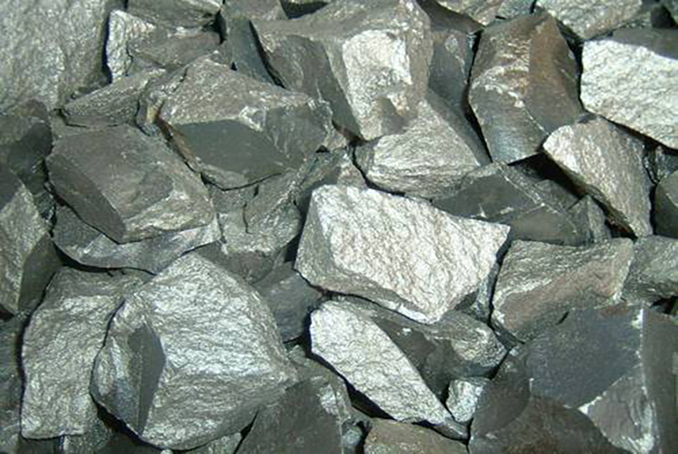

Years of involvement in this field has enabled us to offer supreme quality High Carbon Ferro Chrome. These compounds are widely used during the production of steel as it offers non-corrosive and sturdiness to steel.
Ferro Chrome (Ferro Chromium) is an iron alloy whose main components are chromium and iron, and the chromium content is between 50% and 70%. In addition to the main components of chromium and iron, it also contains impurities such as carbon, silicon, sulfur, and phosphorus. Ferro chrome is often used as an important alloy additive in steel smelting and foundry industries.
According to the different carbon content in ferro chrome, ferrochrome can be divided into four types.
Ferro chrome with different carbon content is suitable for different application scenarios.
There are many kinds of ferro chrome products. The ferrochrome from Dasmaya can meet the current market demand. Cr: 55-75%, C:0.03/0.06/0.1
The quality of ferro chrome is strictly controlled. The company has a strict product quality management system to ensure that the quality of the ferrochromium alloy delivered from the factory meets national standards and meets customer needs. The company’s products have passed ISO9001:2015 certification, and the product quality is guaranteed.
The price of direct factory direct ferro chrome has an advantage. Your order will be shipped directly from the factory, avoiding unnecessary costs for you.
The service is efficient and professional. We have accumulated rich experience in the alloy smelting industry and can provide you with the most professional and effective product solutions. Help you quickly find the product that suits you, avoiding detours.
Ferrochromium is mainly used in steelmaking and welding industry.
High-carbon ferrochrome is usually used as an alloying agent for ball steel (0.5%～1.45%Cr), tool steel, die steel (5%～12%Cr), and high-speed steel (3.8%～4.4%Cr), and can harden steel. Increase the wear resistance and hardness of steel.
High carbon ferro chrome is used in the casting industry. It can improve the heat resistance and hardness of the cast iron.
High carbon ferro chrome is used in the production of silicon chrome, medium, and low carbon ferro chrome.
High carbon ferro chrome powder is used in the production of welding rods.
Medium and low-carbon ferrochrome is used in the production of medium and low-carbon structural steel, carburizing steel, gears, high-pressure blower blades, valve plates, etc.
Micro-carbon ferrochrome is mainly used to produce stainless steel, wear-resistant steel, and heat-resistant steel.